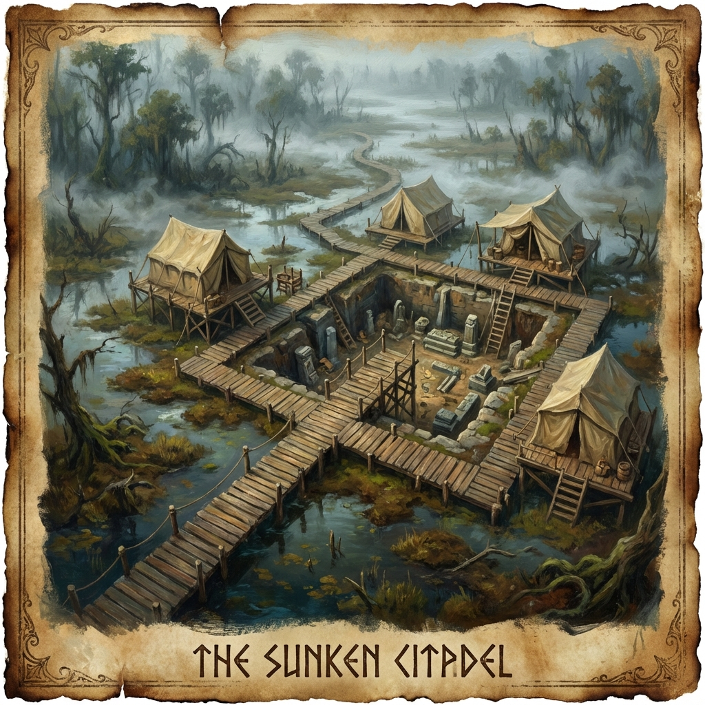

⛺ Murkmire Dig Site
The archaeological excavation that unearthed the eldritch horror's egg
Overview
The Murkmire Dig Site is a Varkenbluff University archaeological excavation located in the swamplands outside the city. This is where the Murkmire Stone—the egg of an eldritch horror—was discovered and subsequently sold to the Museum of Natural History.
Dr. Cassee Dannell worked at this dig site and attempted to warn archaeologists about the stone's true nature before it was whisked away to the museum.
Location
Physical Details
Environment
- Swampland terrain with boardwalks and raised platforms
- Excavation trenches cut through peat and mud
- Canvas tents for researchers and artifact storage
- Wooden scaffolding over dig pits
Key Features
Ambiance
| Sense | Description |
|---|---|
| Sight | Murky water; fog rising from the swamp; muddy trenches |
| Sound | Croaking frogs; buzzing insects; dripping water |
| Smell | Peat, decay, damp earth |
Key NPCs
| NPC | Role | Notes |
|---|---|---|
| Dr. Cassee Dannell | Former Lead Researcher | Tried to warn about the Murkmire Stone |
| University Archaeologists | Field Team | Ignored Dannell's warnings |